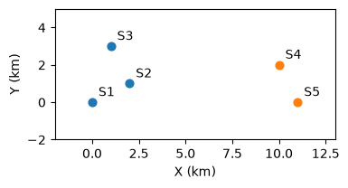
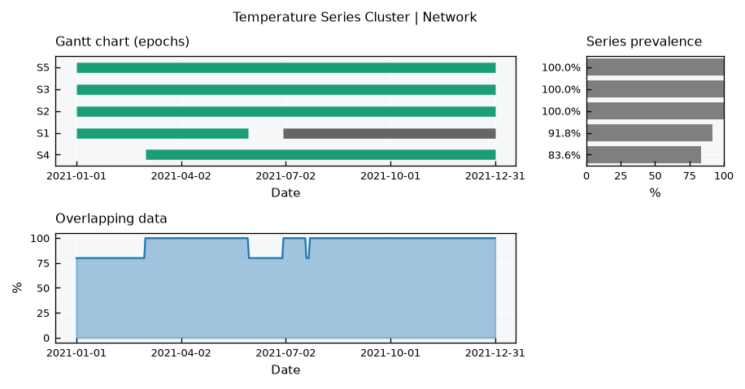
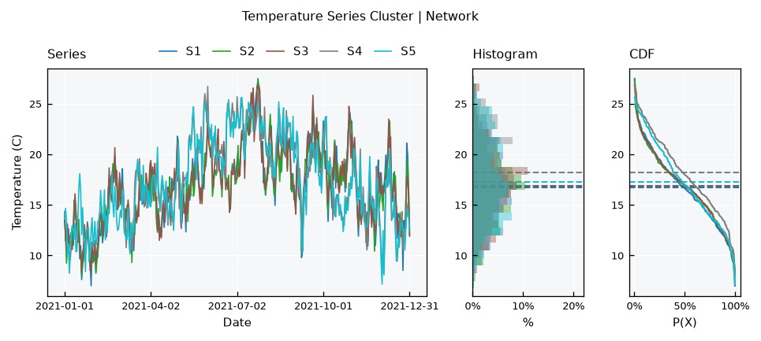
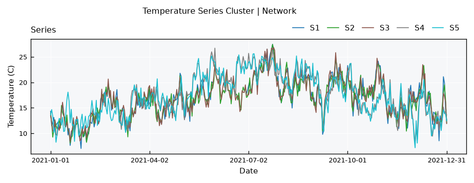
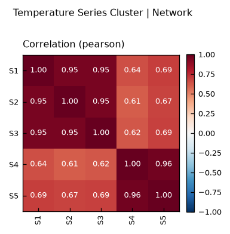
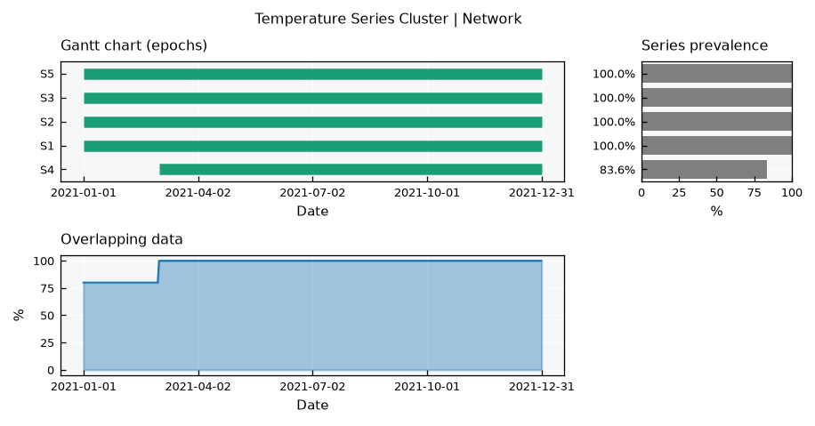
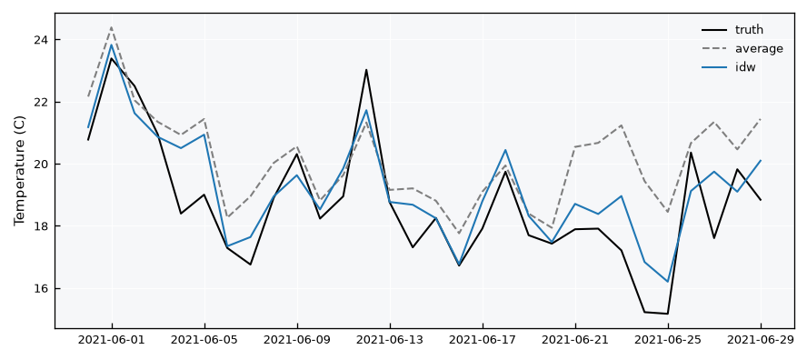

Time Series - Clusters#
A TimeSeriesCluster holds series of the same variable from different sites, like a network of weather stations or rain gauges. Unlike a TimeSeriesCollection, which accepts miscellaneous data, a cluster can compare its series against each other: how correlated the sites are, and how one site can fill the gaps of another.
This tutorial builds a synthetic network of five temperature stations in two sub-regions:
Station |
Sub-region |
Range |
Gaps |
|---|---|---|---|
|
west |
full year |
1 large (30d) |
|
west |
full year |
none |
|
west |
full year |
none |
|
east |
Mar-Dec (shorter) |
none |
|
east |
full year |
1 small (3d) |
Covered here:
Loading the stations into a
TemperatureSeriesClusterViewing data availability and all series together
Correlation between stations via
get_correlation()Gap filling from other stations via
regionalize(), comparing uniform and inverse-distance weights
See also
Check out the Time Series - Collections tutorial first.
Notebook setup#
For users running this tutorial as a Jupyter Notebook, this cell must be executed first:
import sys
import copy
from pathlib import Path
import numpy as np
import pandas as pd
import matplotlib.pyplot as plt
# Install `plans` in `google.colab`.
# Use `pip install plans` for other environments.
if "google.colab" in sys.modules:
import os
os.system(f"{sys.executable} -m pip install -q plans")
from plans.datasets import TemperatureSeriesCluster
from plans.datasets.analyst import Bivar
# This avoids warnings related to uninstalled fonts
import logging
logging.getLogger('matplotlib.font_manager').setLevel(logging.ERROR)
OUTPUT_DIR = Path("outputs/time-series-cluster")
OUTPUT_DIR.mkdir(parents=True, exist_ok=True)
print(f"Outputs will be saved to: ./{OUTPUT_DIR}")
rng = np.random.default_rng(seed=7) # ensure reproducibility
Outputs will be saved to: ./outputs/time-series-cluster
Build a synthetic station network#
Each station gets the same cycle, a weather anomaly common to the whole region, a weather anomaly of its own sub-region, and some local shocks. The anomalies have memory (an autoregressive process), so warm or cold spells last for some days. Stations in the same sub-region share more signal, so they should correlate more.
n = 365
t = np.arange(n)
def make_anomaly(phi, sd):
# autoregressive anomaly: a[t] = phi * a[t-1] + shock
a = np.zeros(n)
e = rng.normal(loc=0, scale=sd, size=n)
for i in range(1, n):
a[i] = phi * a[i - 1] + e[i]
return a
cycle = 18 + 4 * np.sin(2 * np.pi * (t - 100) / 365)
anomaly_region = make_anomaly(phi=0.8, sd=1.0)
anomaly_subregion = {
"west": make_anomaly(phi=0.8, sd=1.2),
"east": make_anomaly(phi=0.8, sd=1.2),
}
# stations: sub-region and coordinates (km)
stations = pd.DataFrame({
"Name": ["S1", "S2", "S3", "S4", "S5"],
"Subregion": ["west", "west", "west", "east", "east"],
"X": [0, 2, 1, 10, 11],
"Y": [0, 1, 3, 2, 0],
})
dates = pd.date_range(start="2021-01-01", periods=n, freq="D")
dc_series = {}
for _, row in stations.iterrows():
dc_series[row["Name"]] = (
cycle
+ anomaly_region
+ anomaly_subregion[row["Subregion"]]
+ rng.normal(loc=0, scale=0.8, size=n)
)
Lets look at where the stations are:
fig, ax = plt.subplots(figsize=(4, 3))
colors = {"west": "tab:blue", "east": "tab:orange"}
for _, row in stations.iterrows():
ax.scatter(row["X"], row["Y"], color=colors[row["Subregion"]], s=40)
ax.annotate(row["Name"], (row["X"], row["Y"]), xytext=(5, 5), textcoords="offset points")
ax.set_xlim(-2, 13)
ax.set_ylim(-2, 5)
ax.set_aspect("equal")
ax.set_xlabel("X (km)")
ax.set_ylabel("Y (km)")
plt.show()

Now add the gaps. Before removing the values of the large gap in S1, keep them as the truth, so we can later check how well the gap was filled:
# large gap in S1 -- keep the truth
GAP = slice(150, 180)
truth = dc_series["S1"][GAP].copy()
dc_series["S1"][GAP] = np.nan
# small gap in S5
dc_series["S5"][200:203] = np.nan
# save files -- S4 starts later
ls_files = []
for name, values in dc_series.items():
df = pd.DataFrame({"datetime": dates, "T": values})
if name == "S4":
df = df.iloc[60:]
file = OUTPUT_DIR / f"{name}.csv"
df.to_csv(file, sep=";", index=False)
ls_files.append(str(file))
print(ls_files)
['outputs/time-series-cluster/S1.csv', 'outputs/time-series-cluster/S2.csv', 'outputs/time-series-cluster/S3.csv', 'outputs/time-series-cluster/S4.csv', 'outputs/time-series-cluster/S5.csv']
Load into a Time Series Cluster#
Like a collection, a cluster is loaded from an info table. The X and Y columns are the station coordinates, used later for inverse-distance weights. Here we use TemperatureSeriesCluster, a cluster ready for temperature series:
info = pd.DataFrame({
"Name": stations["Name"],
"Alias": stations["Name"],
"File": ls_files,
"VarField": "T",
"DtField": "datetime",
"Units": "C",
"X": stations["X"],
"Y": stations["Y"],
"Code": stations["Name"],
"Source": "synthetic",
"Description": "daily air temperature, " + stations["Subregion"] + " sub-region",
"Color": "tab:red",
})
info_file = OUTPUT_DIR / "info.csv"
info.to_csv(info_file, sep=";", index=False)
tsc = TemperatureSeriesCluster(name="Network")
tsc.load_data(table_file=info_file)
tsc.catalog[["name", "x", "y", "start", "end", "variable_min", "variable_max"]]
| name | x | y | start | end | variable_min | variable_max | |
|---|---|---|---|---|---|---|---|
| 0 | S1 | 0 | 0 | 2021-01-01 | 2021-12-31 | 7.014798 | 27.477313 |
| 1 | S2 | 2 | 1 | 2021-01-01 | 2021-12-31 | 8.057301 | 27.454874 |
| 2 | S3 | 1 | 3 | 2021-01-01 | 2021-12-31 | 8.387260 | 26.842874 |
| 3 | S4 | 10 | 2 | 2021-03-02 | 2021-12-31 | 8.225353 | 26.716260 |
| 4 | S5 | 11 | 0 | 2021-01-01 | 2021-12-31 | 7.162614 | 25.622818 |
Data availability#
The default .view() is inherited from the collection: the Gantt chart of each series epochs, the overlapping data across series, and the series prevalence. Note the gap in S1 and the late start of S4:
tsc.view()

All series together#
Since all series are the same variable, they can share the same axes. The series layout mirrors the single TimeSeries view, overlaying every station: the series, their histograms (with common bins) and their CDFs, with dashed lines for the means:
tsc.view_specs["layout"] = "series"
tsc.view()

The cycle dominates, but the two sub-regions drift apart during warm and cold spells. Note also that S4 has a higher mean: its record starts in March, missing the coldest months. Comparing statistics between sites requires a common period.
For the series only, use the series-simple layout:
tsc.view_specs["layout"] = "series-simple"
tsc.view()

Correlation between stations#
The .get_correlation() method computes the correlation matrix between all stations, using only the time steps where both have data. Pairs with fewer overlapping steps than min_overlap are set to NaN:
df_corr = tsc.get_correlation(method="pearson", min_overlap=30)
df_corr.round(3)
| S1 | S2 | S3 | S4 | S5 | |
|---|---|---|---|---|---|
| S1 | 1.000 | 0.952 | 0.952 | 0.644 | 0.690 |
| S2 | 0.952 | 1.000 | 0.953 | 0.607 | 0.673 |
| S3 | 0.952 | 0.953 | 1.000 | 0.617 | 0.685 |
| S4 | 0.644 | 0.607 | 0.617 | 1.000 | 0.961 |
| S5 | 0.690 | 0.673 | 0.685 | 0.961 | 1.000 |
Use the correlation layout to see it as a heatmap:
tsc.view_specs["layout"] = "correlation"
tsc.view()

The two sub-regions show up as two blocks: stations of the same sub-region correlate around 0.95, while stations of different sub-regions stay around 0.7. Spearman correlation is also available with method="spearman".
Note
With a strong cycle, correlation is partly driven by the shared cycle itself. Even unrelated sites under the same climate correlate well.
Filling gaps from other stations#
The .regionalize() method fills the gaps of every station with a weighted average of the other stations, on the time steps where they have data. Observed values are never changed. Two weighting methods are available:
average: all other stations get the same weight.idw: inverse distance weighting, closer stations get more weight.
Check the share of each station in the weights for S1:
df_weights = pd.DataFrame(
{method: tsc.get_weights_by_name(name="S1", method=method) for method in ["average", "idw"]},
index=["S2", "S3", "S4", "S5"],
)
df_weights = df_weights / df_weights.sum()
df_weights.round(2)
| average | idw | |
|---|---|---|
| S2 | 0.25 | 0.47 |
| S3 | 0.25 | 0.33 |
| S4 | 0.25 | 0.10 |
| S5 | 0.25 | 0.10 |
Since .regionalize() changes the data in place, lets run each method on a copy of the cluster:
dc_clusters = {}
for method in ["average", "idw"]:
dc_clusters[method] = copy.deepcopy(tsc)
dc_clusters[method].regionalize(method=method)
The gap in S1 is now closed:
tsc_idw = dc_clusters["idw"]
tsc_idw.view_specs["layout"] = "full"
tsc_idw.view()

How good is the filling?#
Since we kept the truth, we can compare the filled values against it using the Bivar metrics:
gap_dates = dates[GAP]
dc_filled = {}
for method, cluster in dc_clusters.items():
ts = cluster.collection["S1"]
s = ts.data.set_index(ts.dtfield)[ts.varfield]
dc_filled[method] = s.loc[gap_dates].values
df_metrics = pd.DataFrame(
{method: Bivar.get_metrics(observed=truth, predicted=filled) for method, filled in dc_filled.items()}
).T
df_metrics[["RMSE", "MAE", "Bias", "R2"]]
| RMSE | MAE | Bias | R2 | |
|---|---|---|---|---|
| average | 1.952558 | 1.547067 | 7.487313 | 0.022263 |
| idw | 1.040685 | 0.824099 | 2.649993 | 0.722251 |
And see it on the gap window:
fig, ax = plt.subplots(figsize=(7, 3))
ax.plot(gap_dates, truth, color="black", label="truth")
ax.plot(gap_dates, dc_filled["average"], color="tab:gray", linestyle="--", label="average")
ax.plot(gap_dates, dc_filled["idw"], color="tab:blue", label="idw")
ax.set_ylabel("Temperature (C)")
ax.legend(frameon=False)
plt.show()

Inverse distance weighting follows the truth much closer, since it relies mostly on S2 and S3, which share the west sub-region weather. The uniform average gives half of the weight to the east stations, which have their own weather.
Warning
.regionalize() takes the other stations values as they are. Stations with systematically different levels (e.g., temperature at different elevations) will bias the filling.
Recap#
A
TimeSeriesClusterholds same-variable series from different sites, loaded from an info table with station coordinates.The
seriesandcorrelationlayouts show the series together and the correlation between sites; the default layout shows data availability.get_correlation()compares sites on their overlapping time steps.regionalize()fills gaps from other sites, with uniform or inverse-distance weights.